Cada cartão abre o jogo num mundo super plano (precisa de servidor estático: python -m http.server 8123 e abrir http://localhost:8123/cenarios-pois.html). Tecla N liga o voo (noclip).
Os procedurais aceitam piso=planicie|floresta|deserto|neve|montanha. Sem tipo nem micro, ?cenario=lego mostra só fazenda, mina e serraria (a grade de 14 tipos não cabe no mapa) e os micro-POIs. Gerada por cd tests && node cenarios-pois.js.
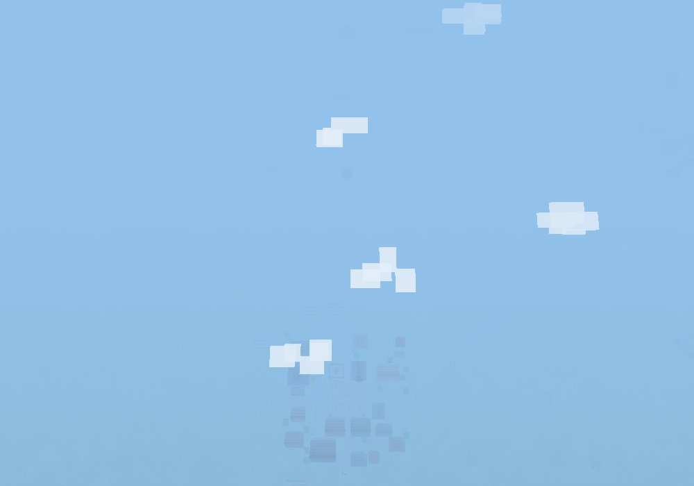
Todos os POIs de desenho fixo (mapa manual)
20 POIs permanentes e de guerra + 4 decorações dormentes: Fazenda, Mina, Serraria, Acampamento de caçadores, Santuário, Ponte, Forte, Torre de vigia, Taverna, Entreposto comercial, Ruínas antigas, Pousada, Alojamento, Acampamento fortificado, Trincheira, Hospital de campanha, Depósito de suprimentos, Atalaia de madeira, Barricada de estrada, Vila em escombros
?cenario=pois&auto=1&mute=1&seed=11
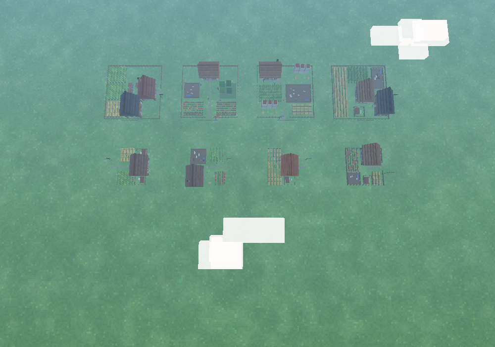
Fazenda: variações procedurais
8 POIs: 4 variações (esqueletos diferentes) em cada tamanho, médio e pequeno
?cenario=lego&tipo=farm&auto=1&mute=1&seed=11
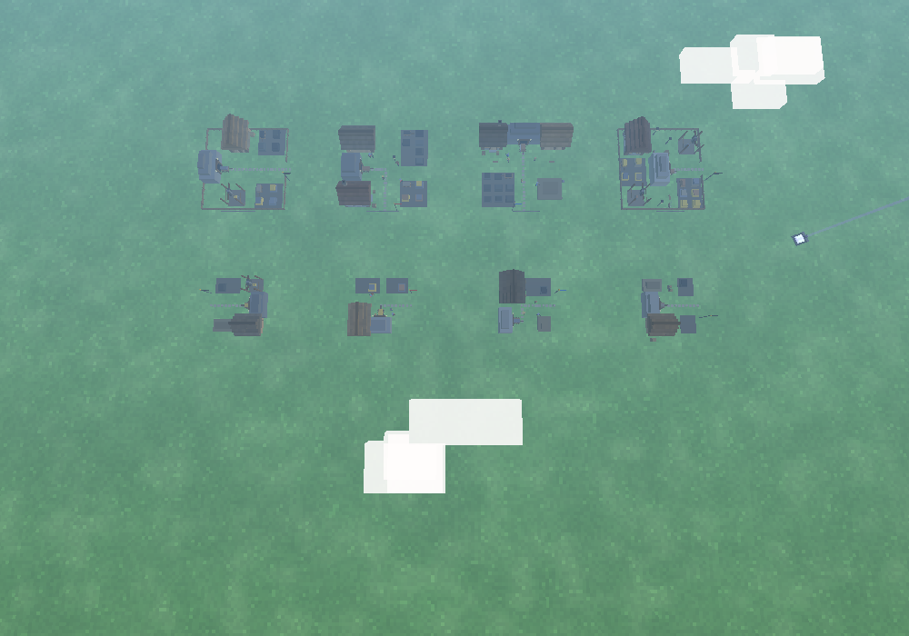
Mina: variações procedurais
8 POIs: 4 variações (esqueletos diferentes) em cada tamanho, médio e pequeno
?cenario=lego&tipo=mine&auto=1&mute=1&seed=11
Serraria: variações procedurais
8 POIs: 4 variações (esqueletos diferentes) em cada tamanho, médio e pequeno
?cenario=lego&tipo=sawmill&auto=1&mute=1&seed=11
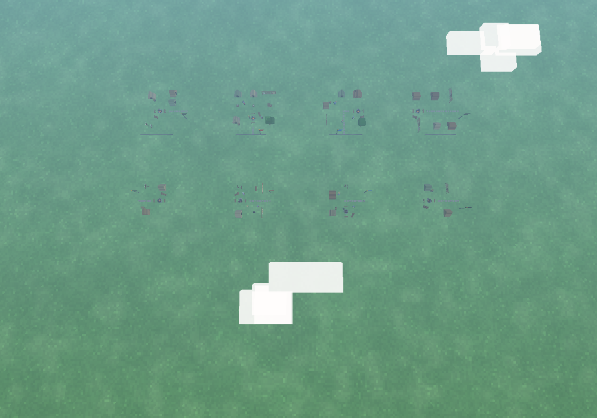
Acampamento de caçadores: variações procedurais
8 POIs: 4 variações (esqueletos diferentes) em cada tamanho, médio e pequeno
?cenario=lego&tipo=hunters&auto=1&mute=1&seed=11
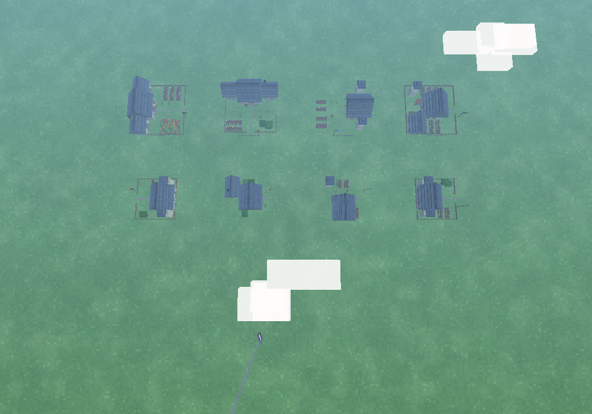
Santuário: variações procedurais
8 POIs: 4 variações (esqueletos diferentes) em cada tamanho, médio e pequeno
?cenario=lego&tipo=sanctuary&auto=1&mute=1&seed=11
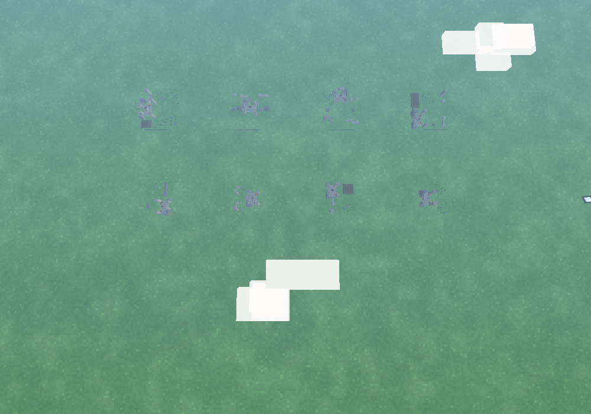
Ruínas antigas: variações procedurais
8 POIs: 4 variações (esqueletos diferentes) em cada tamanho, médio e pequeno
?cenario=lego&tipo=ruins&auto=1&mute=1&seed=11
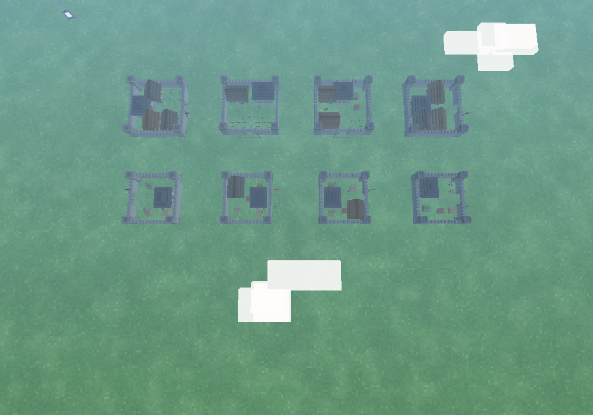
Forte: variações procedurais
8 POIs: 4 variações (esqueletos diferentes) em cada tamanho, médio e pequeno
?cenario=lego&tipo=fort&auto=1&mute=1&seed=11
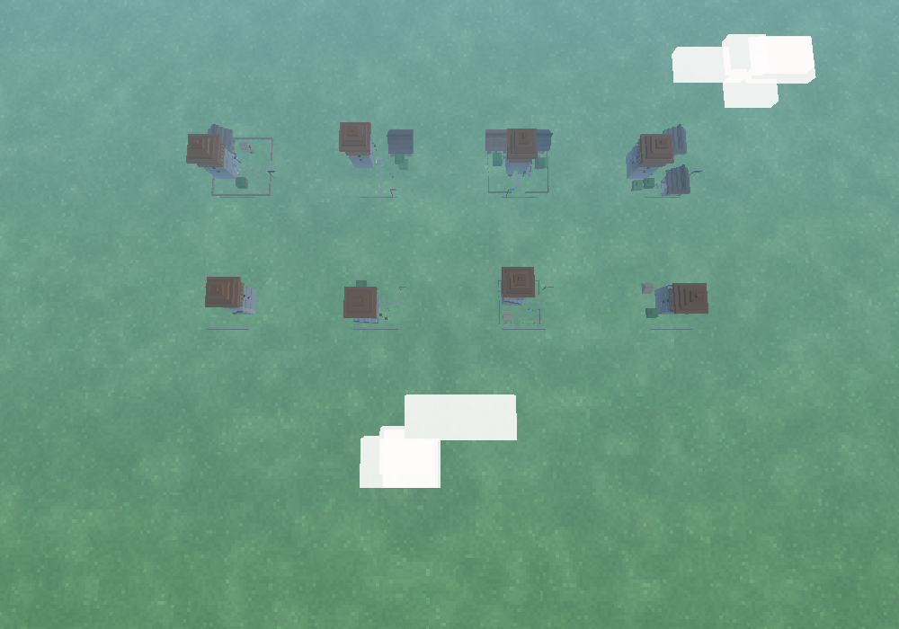
Torre de vigia: variações procedurais
8 POIs: 4 variações (esqueletos diferentes) em cada tamanho, médio e pequeno
?cenario=lego&tipo=tower&auto=1&mute=1&seed=11
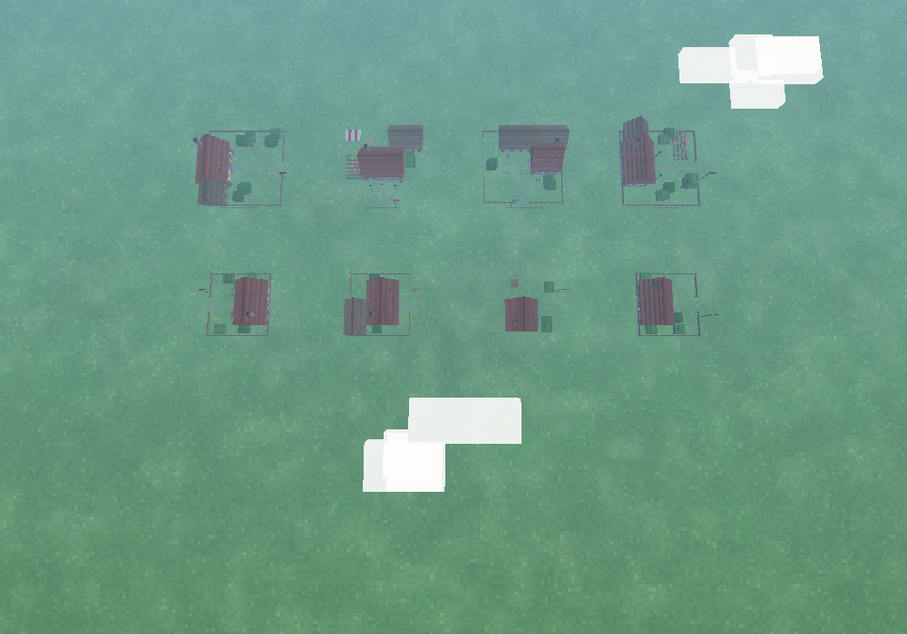
Pousada: variações procedurais
8 POIs: 4 variações (esqueletos diferentes) em cada tamanho, médio e pequeno
?cenario=lego&tipo=inn&auto=1&mute=1&seed=11
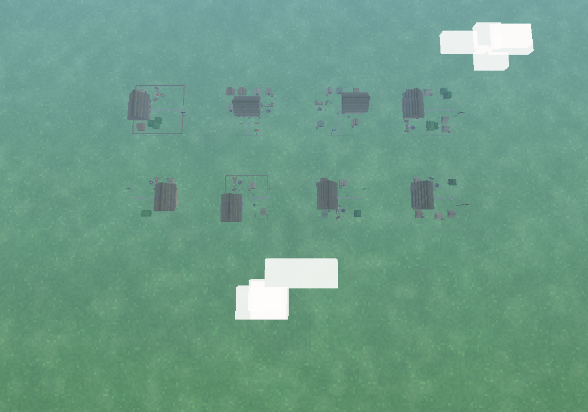
Alojamento: variações procedurais
8 POIs: 4 variações (esqueletos diferentes) em cada tamanho, médio e pequeno
?cenario=lego&tipo=lodge&auto=1&mute=1&seed=11
Entreposto comercial: variações procedurais
8 POIs: 4 variações (esqueletos diferentes) em cada tamanho, médio e pequeno
?cenario=lego&tipo=post&auto=1&mute=1&seed=11
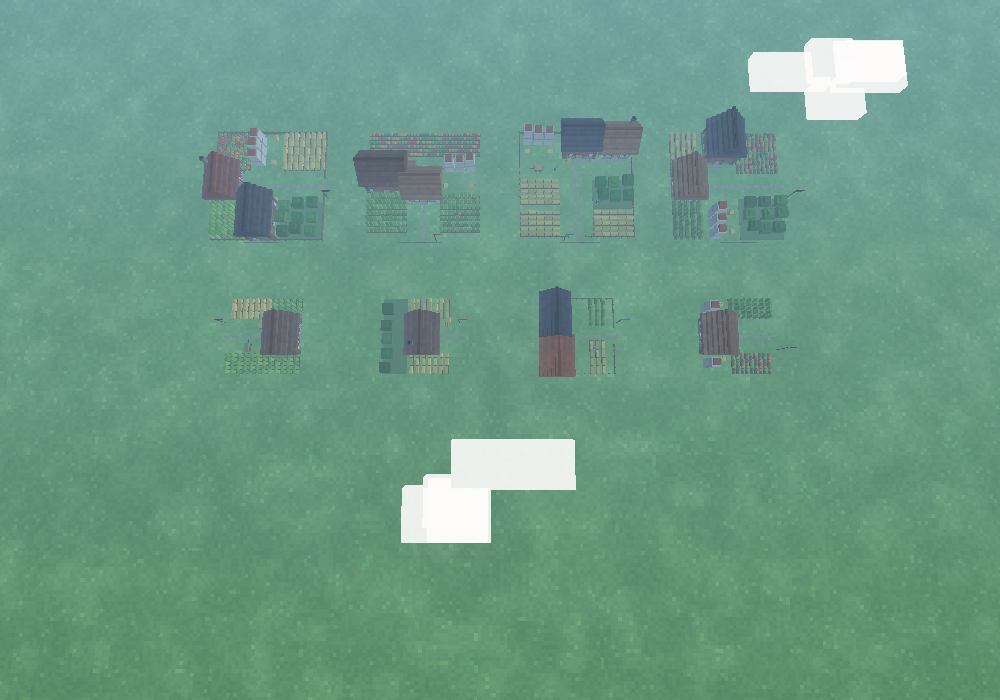
Plantação: variações procedurais
8 POIs: 4 variações (esqueletos diferentes) em cada tamanho, médio e pequeno
?cenario=lego&tipo=plantation&auto=1&mute=1&seed=11
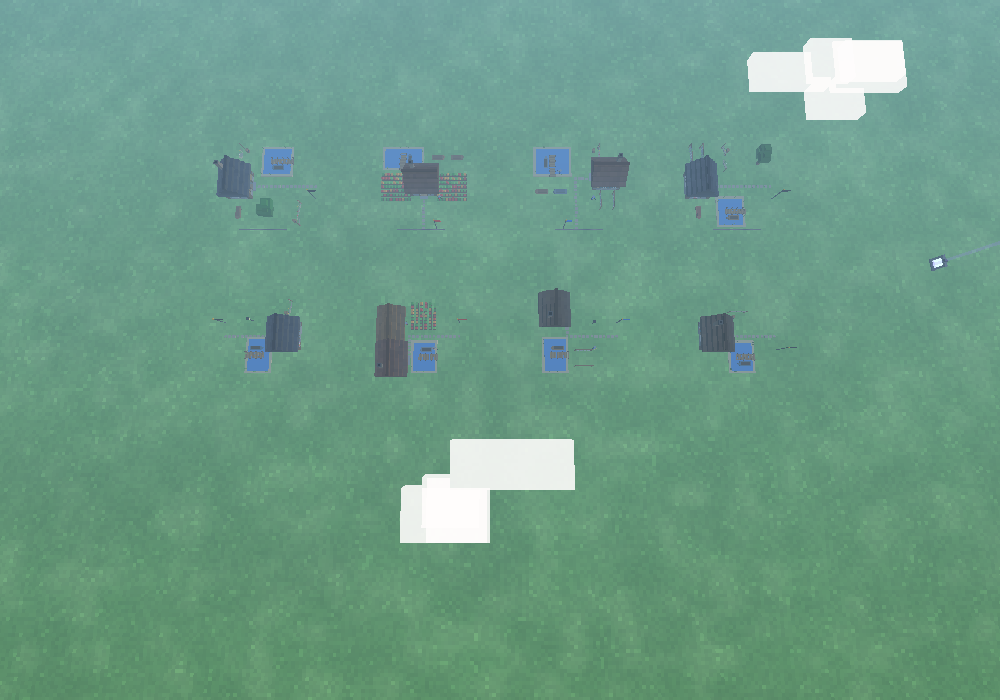
Vila de pesca: variações procedurais
8 POIs: 4 variações (esqueletos diferentes) em cada tamanho, médio e pequeno
?cenario=lego&tipo=fishery&auto=1&mute=1&seed=11
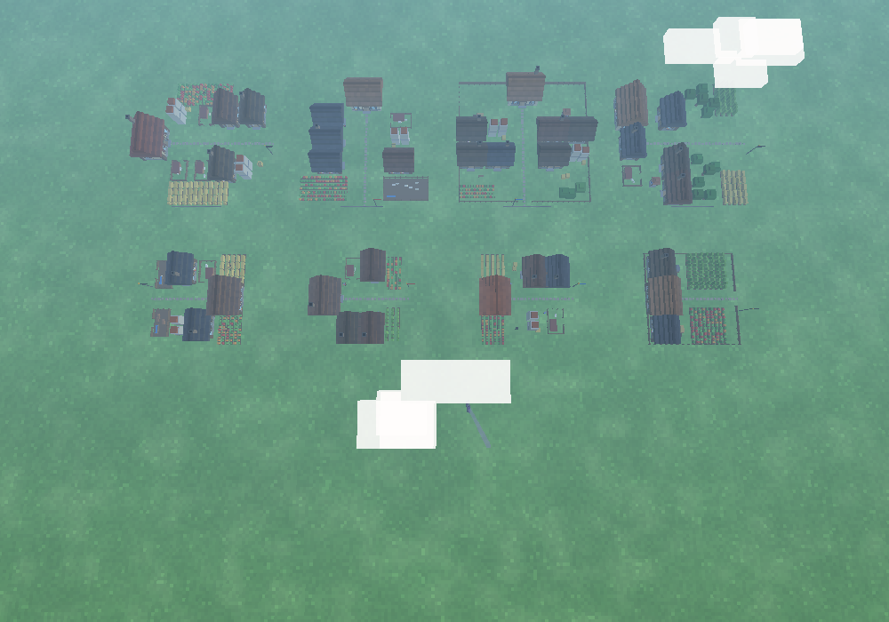
Vila de trabalhadores: variações procedurais
8 POIs: 4 variações (esqueletos diferentes) em cada tamanho, médio e pequeno
?cenario=lego&tipo=workers&auto=1&mute=1&seed=11
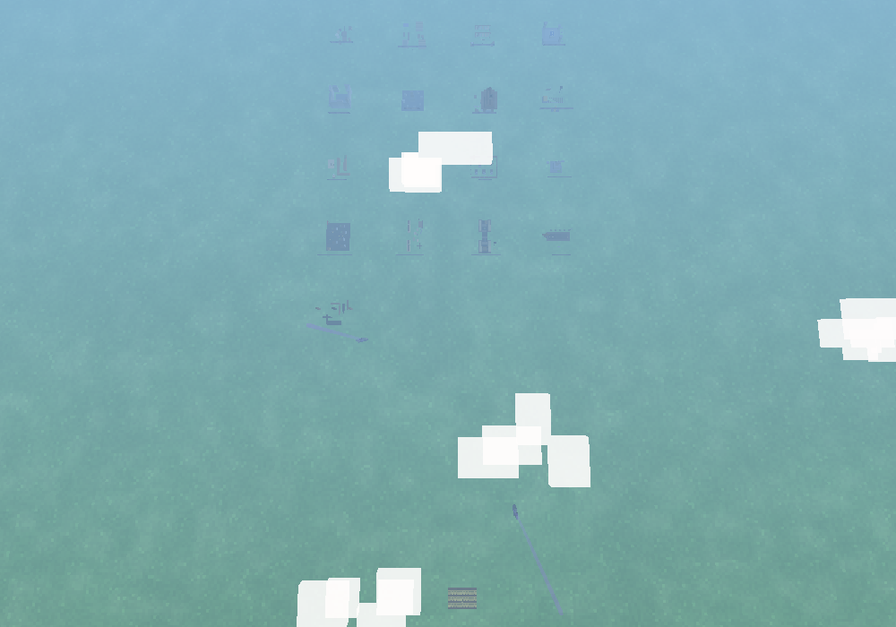
Todos os micro-POIs
21 micro-POIs: 4 que já existiam (decorações dormentes) e 17 novos
?cenario=legoµ=1&auto=1&mute=1&seed=11